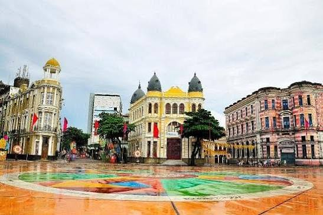
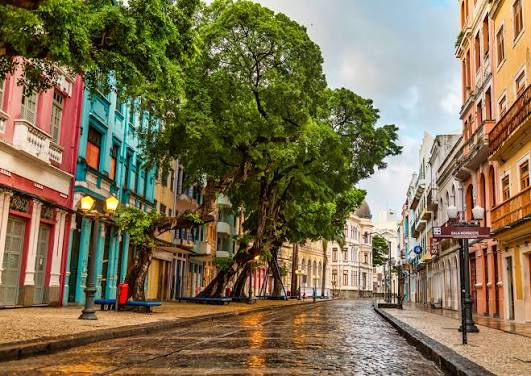
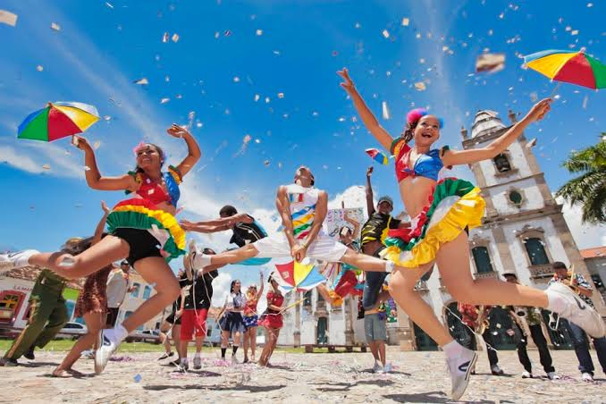
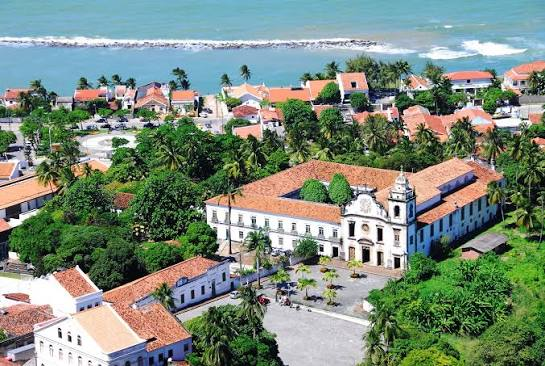
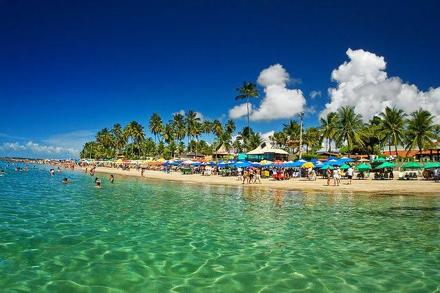

Recife: uma cidade moldada pelo porto
O desenvolvimento do Recife esteve profundamente ligado ao porto e às atividades comerciais do litoral pernambucano. Durante o período colonial, a região ganhou importância estratégica. No século XVII, sob a presença neerlandesa e a administração de Maurício de Nassau, a cidade recebeu obras, pontes, canais e iniciativas científicas e urbanas que marcaram sua história. A própria Prefeitura do Recife registra esse período como uma fase de intensa transformação. [P1]

Marco Zero: o ponto de encontro entre cidade e memória
A Praça Rio Branco, conhecida como Marco Zero, ocupa posição central no Bairro do Recife e funciona como um dos grandes símbolos da capital pernambucana. A Prefeitura a apresenta como principal cartão-postal da cidade, mas sua importância vai além da fotografia: o local está ligado à formação histórica do Recife e à relação do núcleo urbano com o porto. [P2]
O entorno concentra edifícios, ruas e espaços que revelam diferentes etapas da história da cidade. Com o passar do tempo, o lugar deixou de ser apenas uma referência de origem e circulação para também se tornar palco de grandes eventos públicos.
No Carnaval, o Marco Zero recebe apresentações de frevo, maracatu e diversos gêneros musicais. Isso faz com que passado e presente coexistam no mesmo espaço: a praça preserva significado histórico, mas continua sendo transformada pelo uso cultural contemporâneo. [P2][P3]

Recife Antigo: muitas épocas em poucas ruas
O Bairro do Recife é um dos melhores lugares para perceber a sobreposição de épocas. Igrejas, praças, ruas estreitas, edifícios e antigas estruturas portuárias revelam que a cidade foi sendo reconstruída sem apagar totalmente as fases anteriores.
Roteiros culturais promovidos pela Prefeitura passam por locais como o Marco Zero, a Igreja Madre de Deus, a Rua do Bom Jesus, a Sinagoga Kahal Zur Israel, a Torre Malakoff e a Praça do Arsenal. Essa sequência mostra como o bairro concentra memórias religiosas, comerciais, políticas e urbanas. [P4]
A Rua do Bom Jesus, com suas fachadas coloridas, é hoje uma das imagens mais difundidas do Recife. Historicamente, porém, ela também está ligada à diversidade de grupos que circularam pelo porto, inclusive comunidades judaicas que encontraram espaço no Recife durante o período neerlandês. A Kahal Zur Israel permanece como referência dessa memória. [P1][P4]

Frevo, maracatu e cultura em movimento
Em Pernambuco, cultura popular não é apenas algo exposto: ela ocupa ruas, cortejos, praças e festas. O Carnaval do Recife reúne manifestações como frevo, maracatu, caboclinho, coco de roda, ciranda e afoxé, além de outros ritmos que dialogam com a tradição local. [P3]
O frevo se tornou um dos símbolos mais conhecidos do estado. Sua música acelerada e sua dança intensa carregam elementos que se relacionam historicamente com bandas de rua e movimentos corporais influenciados pela capoeira. O maracatu, por sua vez, preserva fortes raízes afro-brasileiras e combina percussão, cortejo, personagens e referências religiosas e históricas. [P3]
O Recife também mostra como tradição e inovação podem conviver. A partir dos anos 1990, o Manguebeat reuniu referências regionais e linguagens contemporâneas, aproximando maracatu, rock, hip hop e música eletrônica. O resultado reforça uma ideia importante: cultura não é parada no tempo; ela se transforma sem necessariamente perder suas raízes.

Olinda: patrimônio em pedra, cal e paisagem
Olinda reúne um dos conjuntos históricos mais reconhecidos do país. Igrejas, conventos, casario, ladeiras, ateliês e mirantes formam uma paisagem que não pertence a uma única época. Ao longo de séculos, usos religiosos, residenciais, artísticos e comerciais modificaram a cidade e produziram o conjunto que hoje atrai visitantes.
A preservação ganhou força no século XX. Monumentos importantes começaram a receber proteção ainda na década de 1930. Em 1980, Olinda foi reconhecida como Monumento Nacional e, em 1982, seu sítio histórico recebeu da UNESCO o título de Patrimônio Cultural da Humanidade. A Prefeitura registra esse processo como resultado de ações sucessivas de valorização e proteção do conjunto histórico. [P5][P6]
A experiência turística de Olinda também depende da topografia. Caminhar pelas ladeiras conecta largos, igrejas e mirantes. A cidade é vista aos poucos, e a própria caminhada ajuda a perceber como arquitetura, relevo e paisagem se combinam.

Porto de Galinhas: a geologia por trás do cartão-postal
Porto de Galinhas fica no município de Ipojuca e é conhecido especialmente pelas piscinas naturais. Elas aparecem com maior nitidez na maré baixa e estão diretamente relacionadas à presença dos recifes próximos à costa.
O Serviço Geológico do Brasil registra que os recifes locais incluem arenitos colonizados por corais e algas. Essas formações ajudam a represar a água do mar e criam áreas rasas e protegidas. Ou seja: aquilo que o visitante percebe apenas como uma paisagem bonita é também resultado de processos geológicos e biológicos de longa duração. [P7]
O Ministério do Turismo destaca Porto de Galinhas como um dos principais atrativos de Ipojuca e chama atenção para a combinação de piscinas naturais, águas mornas, mangues e outros elementos do patrimônio local. A viagem termina, portanto, mostrando que turismo histórico não precisa falar apenas de prédios antigos: entender a história natural de uma paisagem também muda a forma de conhecê-la. [P8]
Fim da rota pernambucana.
Do porto histórico às piscinas naturais, Pernambuco mostra como comércio, colonização, cultura popular, patrimônio e geologia podem ocupar a mesma viagem.